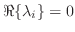

This technique begins with the assumption that the differential equation of motion in the object is known. Furthermore, the technique requires the assumption that the system is linear, or that the data has been conditioned such that it resembles an analysis of a linear system. The goal, as introduced qualitatively in the previous section, is to describe the behavior of the system as a linear combination of modes. The algorithm is presented without reference to dimensionality. It has been successfully applied to vectors of coefficients as well as matrices. [31, p. 317]
Another perspective: what we have been calling the ``modes'' are actually the eigenvectors of a matrix  , that describes the motion of the system as a constant-coefficient linear differential equation. Recall from linear algebra that eigenvalues are solutions
, that describes the motion of the system as a constant-coefficient linear differential equation. Recall from linear algebra that eigenvalues are solutions  , such that
, and the eigenvectors are
, such that
, and the eigenvectors are  .[31, p. 283] If we think of a matrix as a linear transformation of a vector, for example a filter, the eigenvectors are vectors that pass through the linear transformation unchanged except for a scale factor,
.[31, p. 283] If we think of a matrix as a linear transformation of a vector, for example a filter, the eigenvectors are vectors that pass through the linear transformation unchanged except for a scale factor,  , which is the eigenvalue. Our description of a mode shape is almost precisely this: a closed path, through which the eigenvalue rotates the vibration in phase. [23, p. 8] A constant-coefficient linear differential equation could be, e.g., the wave equation as derived in 1.1, however it need not merely be a 2nd-order differential equation. In fact, this equation could be of
arbitrary order, up to the practical limitations of the abacus, and the amount of papyrus being used to implement the technique. This is because we assume, once again, the solutions to the equation of interest to be of the form
, so differentiating is equivalent to multiplying by the factor
. The modes are eigenvectors will form a basis which diagonalizes the single nth-order differential equation into a system of n 1st-order differential equations. Such equations are of the general form[27, p. 16]
, which is the eigenvalue. Our description of a mode shape is almost precisely this: a closed path, through which the eigenvalue rotates the vibration in phase. [23, p. 8] A constant-coefficient linear differential equation could be, e.g., the wave equation as derived in 1.1, however it need not merely be a 2nd-order differential equation. In fact, this equation could be of
arbitrary order, up to the practical limitations of the abacus, and the amount of papyrus being used to implement the technique. This is because we assume, once again, the solutions to the equation of interest to be of the form
, so differentiating is equivalent to multiplying by the factor
. The modes are eigenvectors will form a basis which diagonalizes the single nth-order differential equation into a system of n 1st-order differential equations. Such equations are of the general form[27, p. 16]
| (1.7.1) |
The first step is to convert this nth-order equation into a system of first-order equations using matrices. The matrix to construct will be a companion matrix, one that applies the transition from  to , etc. Call it in this general case. It looks like this:
to , etc. Call it in this general case. It looks like this:
| (1.7.3) |
or, more humanely, . We can solve the response of the system as a sum of exponentials,
If the matrix A has a set of unique eigenvalues, , the corresponding eigenvectors will be the modal vectors .  is a matrix which ``diagonalizes'' into , a diagonal matrix with every
is a matrix which ``diagonalizes'' into , a diagonal matrix with every  down the middle. In this case, it would take a lot of graph paper to calculate the expansion of the matrix exponential, as its Taylor series involves taking arbitrarily high powers of a non-diagonal matrix. Fortunately, we can calculate the powers of a diagonal matrix very easily, and furthermore,[27, p. 20]
down the middle. In this case, it would take a lot of graph paper to calculate the expansion of the matrix exponential, as its Taylor series involves taking arbitrarily high powers of a non-diagonal matrix. Fortunately, we can calculate the powers of a diagonal matrix very easily, and furthermore,[27, p. 20]
so for our exponential function, we may instead write
| (1.7.5) |
Substituting this in for equation (1.7.4), we get the following:
 |
(1.7.6) |
We then find the coefficients for the initial conditions using a regression of the form
 tells us what combinations of are needed to produce . Then we plug these coefficients back into our formula to find the response:
tells us what combinations of are needed to produce . Then we plug these coefficients back into our formula to find the response:
| (1.7.8) |
When we examine the eigenvectors and eigenvalues of a constant-coefficient linear differential equation, many things become clear. We can even determine a solution for . If we analyze the values in , which will likely be complex, we will find that the mode shape in with the largest corresponding
will dominate, if there is a component of the initial condition in this vector. If any
, the system will tend towards an oscillation along the mode shape in the corresponding . If any
, the system is acausal. [31, p. 318]
Because we typically want to perform the algorithm for a mesh of mass-spring models in a network, we likely would form the vectors  into matrices, and adjust the dimensions accordingly.[27, p. 20]
into matrices, and adjust the dimensions accordingly.[27, p. 20]
The decomposition of the forcing function would reduce to:
| (1.7.9) |